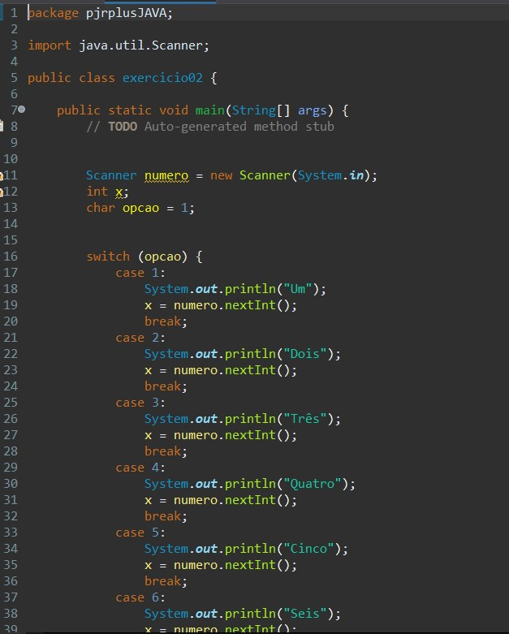
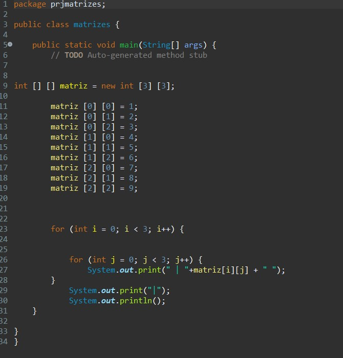
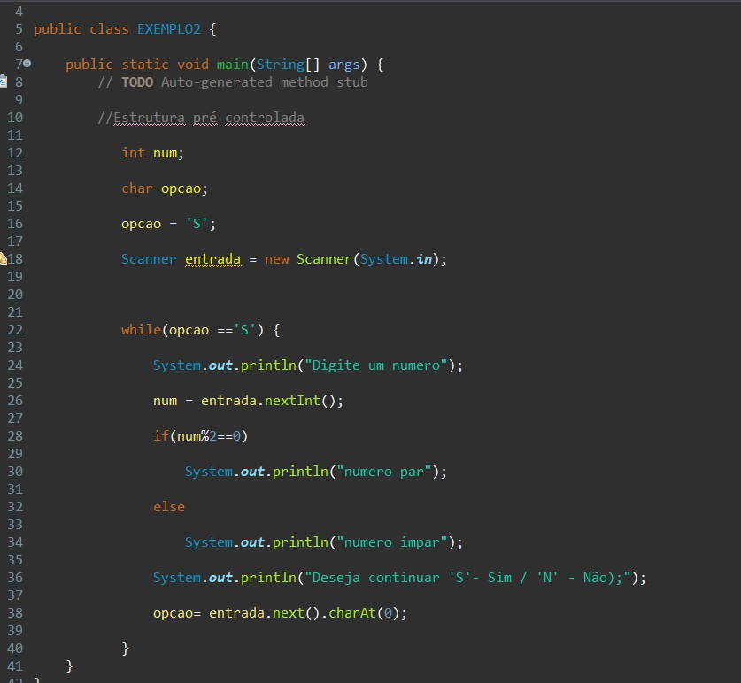
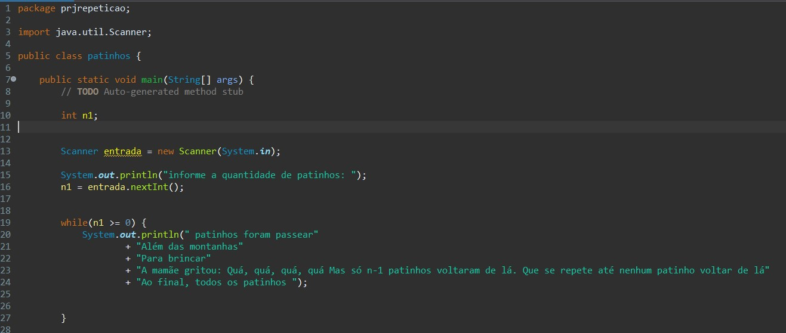
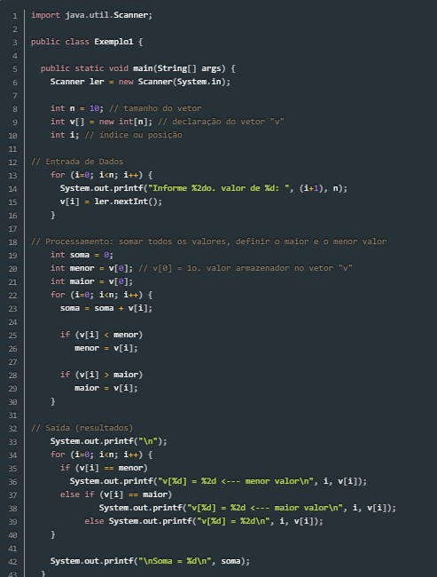
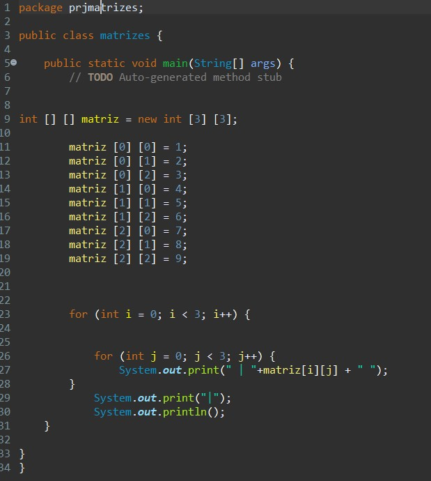

O switch/case testa o valor contido em uma variável, realizando uma comparação com cada uma das opções. Cada uma dessas possíveis opções é delimitada pela instrução case.
O for é uma estrutura de repetição na qual seu ciclo será executado por um tempo ou condição pré-determinados e em uma quantidade de vezes que determinamos.
O if/else é uma estrutura de condição em que uma expressão booleana é analisada. Quando a condição que estiver dentro do if for verdadeira, ela é executada. Já o else é utilizado para definir o que é executado quando a condição analisada pelo if for falsa. Caso o if seja verdadeiro e, consequentemente executado, o else não é executado.
O while também é uma estrutura de repetição, assim como o for. A diferença entre ambas é que, enquanto usamos o for quando geralmente conhecemos a quantidade de vezes que o trecho de código deverá ser repetido, nós utilizamos o while quando não sabemos exatamente quantas vezes o código será repetido.
Os vetores (ou arrays) são estruturas de dados que representam um conjunto de valores do mesmo tipo (estrutura homogênea), referenciáveis pelo mesmo nome e individualizados entre si através de sua posição dentro desse conjunto (variáveis indexadas).
Uma matriz é um vetor de vetores, todos de mesmo tamanho. Em Java, é possível criar um vetor de vetores onde cada elemento tem um tamanho diferente. Nesse caso, cada elemento deve ser criado de forma independente. Todo vetor em Java tem o atributo length que define o seu número de elementos.
